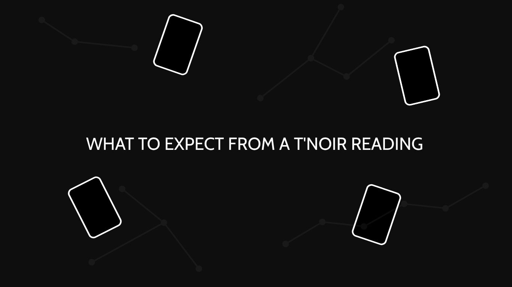

What to Expect from a T'NOIR Reading
A closer look at your reading experience — from your first question to your final interpretation.

A T'NOIR reading is built around the question you bring and the cards drawn in response to it. Nothing is staged for atmosphere. The point is a clear, personal interpretation you can sit with — and keep private.
01 — Start with your question
Every reading begins with something you want to understand. When booking a T'NOIR reading, you'll provide your questions through our booking process. Your questions give the reading its direction and help us understand what you would like to explore.
You don't need to phrase your question perfectly. What matters is that it reflects something you genuinely want to understand.
02 — Your reading is prepared
Once your booking is received, your questions are reviewed before the reading begins. The cards are then drawn and interpreted in relation to the question being explored.
A card does not have one meaning that applies identically to everyone. Its meaning can change depending on the question, context, position, and relationship with the other cards. This is where interpretation becomes personal.
03 — A reading tailored to you
At T'NOIR, we don't believe every reading should sound the same. Your question, your circumstances, and the cards drawn all contribute to the interpretation.
Rather than simply providing generic card definitions, the reading focuses on what the cards may suggest in the context of your specific question. Your question shapes the reading.
04 — Your reading is delivered
Once the interpretation is complete, your reading is prepared and delivered through the T'NOIR booking system. Our standard delivery target is within 24 hours, subject to the details shown during booking.
The final reading is designed to be clear, considered, and easy to return to whenever you need to reflect on it.
05 — Take your time with it
A reading doesn't have to end the moment you finish reading it. Some messages may immediately make sense. Others may give you something to think about later.
Take the time to consider what resonates with your situation, what raises a new question, and what perspective you may not have considered before. A reading is a perspective. What you do with that perspective is yours.
06 — Your privacy matters
Your questions and reading are personal. T'NOIR treats every reading as confidential and handles client information with care.
Your story is yours to share. It should never become someone else's content.
What a T'NOIR reading is — and isn't
A T'NOIR reading is an opportunity for reflection, perspective, and personalized interpretation. It is not a guarantee of a specific future outcome.
It does not make decisions for you, establish another person's private thoughts as fact, or replace professional medical, legal, or financial advice.
The cards offer a perspective. The choice remains yours.
Ready to begin?
Your question is where the reading starts. Explore our available readings and choose the one that fits what you would like to explore.
Your story. Your perspective.